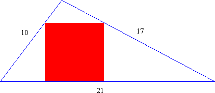
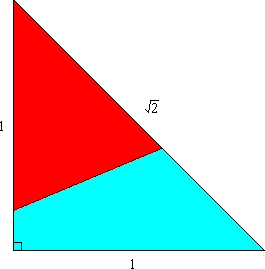

Show that if the difference of the cubes of two consecutive integers is the square of an integer, then this integer is the sum of the squares of two consecutive integers.
(The smallest non-trivial example is: 83 - 73 = 169. This is the square of an integer, namely 13, which can be expressed as 22 + 32.)
Hint - Solution
It is well known that the harmonic series, 1/1 + 1/2 + 1/3 + 1/4 + ... , diverges. Consider a depleted harmonic series; see below; which contains only terms whose denominator does not contain a 9. (In decimal representation.) Does this series diverge or converge?
S = 1/1 + 1/2 + ... + 1/8 + 1/10 + ... + 1/18 + 1/20 + ... + 1/88 + 1/100 + 1/101 + ...
Hint - Answer - Solution
A triangle has internal angles A, B, and C, none of which exceeds 90°. Show that
Hint - Solution
Show that the sum of 9999 consecutive squares cannot be a perfect power.
That is, show that (n + 1)2 + ... + (n + 9999)2 = mr has no solution in integers n, m, r > 1.
Hint - Solution
A car travels downhill at 72 m.p.h. (miles per hour), on the level at 63 m.p.h., and uphill at only 56 m.p.h. The car takes 4 hours to travel from town A to town B. The return trip takes 4 hours and 40 minutes.
Find the distance between the two towns.
Hint - Answer - Solution
A triangle has sides 10, 17, and 21. A square is inscribed in the triangle. One side of the square lies on the longest side of the triangle. The other two vertices of the square touch the two shorter sides of the triangle. What is the length of the side of the square?
Hint - Answer - Solution
A piece of wooden board in the shape of an isosceles right triangle, with sides 1, 1, , is to be sawn into two pieces. Find the length and location of the shortest straight cut which divides the board into two parts of equal area.
Hint - Answer - Solution
The sum of three numbers is 6, the sum of their squares is 8, and the sum of their cubes is 5. What is the sum of their fourth powers?
Hint - Answer - Solution
Does there exist a (base 10) 67-digit multiple of 267, written exclusively with the digits 6 and 7?
Hint - Answer - Solution
| Nick Hobson nickh@qbyte.org |